마케터 필살기 MCP 5선
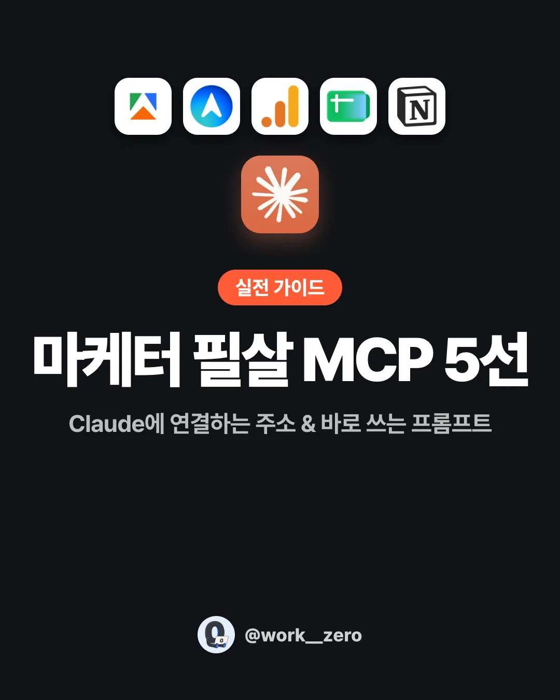
30초 요약
- Claude는 내 광고·매출·경쟁사 데이터를 못 보면 뻔한 답을 해요. MCP는 Claude를 실제 도구에 연결하는 방법이에요.
- 연결은 Claude 설정 → 커넥터에 주소 한 줄을 넣고 로그인하면 끝이에요. (Apify·Meta Ads·Notion)
- 연결한 다음에는 아래 바로 쓰는 프롬프트를 복사해서 채팅창에 붙여넣으면 돼요.
| MCP | 하는 일 | 연결 주소 | 난이도 |
|---|---|---|---|
| Apify | 경쟁사 릴스·훅 수집 | https://mcp.apify.com | 쉬움 |
| Meta Ads | 광고 성과 확인·수정 | https://mcp.facebook.com/ads | 보통 |
| Google Analytics | 유입·전환·퍼널 분석 (읽기 전용) | 로컬 설치 (Claude 데스크톱) | 높음 |
| Google Sheets | 보고서 시트 읽기·쓰기 | https://sheetsmcp.googleapis.com/mcp/v1 | 높음 |
| Notion | 기획 DB 읽기·등록 | https://mcp.notion.com/mcp | 쉬움 |
추천 순서: 쉬움부터. Notion → Apify → Meta Ads를 먼저 연결하고, GA4·Sheets는 Google Cloud 설정이 필요해서 마지막에 하세요.
1. MCP가 뭔가요?
지금은 광고 관리자에서 숫자를 복사해서 Claude에 붙여넣고, 답을 다시 시트에 옮기죠. Claude는 붙여넣은 것만 알고, 나머지는 모른 채로 답해요. MCP(Model Context Protocol)를 연결하면 Claude가 그 도구에 직접 접속해요. 광고 성과를 스스로 조회하고, 시트에 계산해서 넣고, 노션에 기록까지 해요.
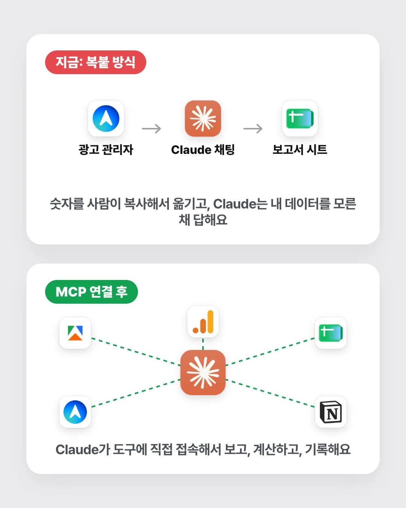
2. 공통 준비: Claude에 커넥터 추가하는 법
모든 MCP는 같은 방법으로 연결해요.
- Claude(웹 또는 데스크톱) 왼쪽 아래 프로필 → 설정 → 커넥터로 들어가요.
- 사용자 지정 커넥터 추가를 누르고, 이름과 연결 주소(URL) 를 붙여넣어요.
- 추가를 누르면 해당 서비스 로그인 창이 떠요. 로그인하고 권한을 승인해요.
- 채팅할 때 입력창 왼쪽 아래 + → 커넥터에서 쓸 커넥터를 켜요.
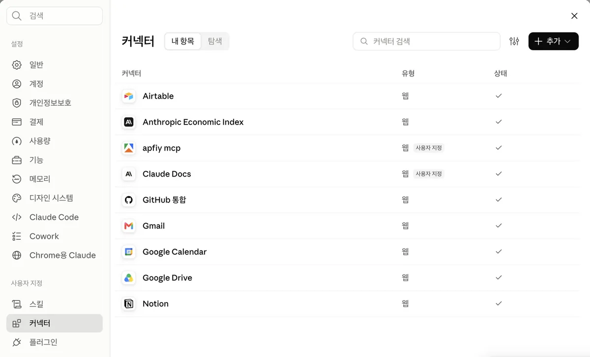
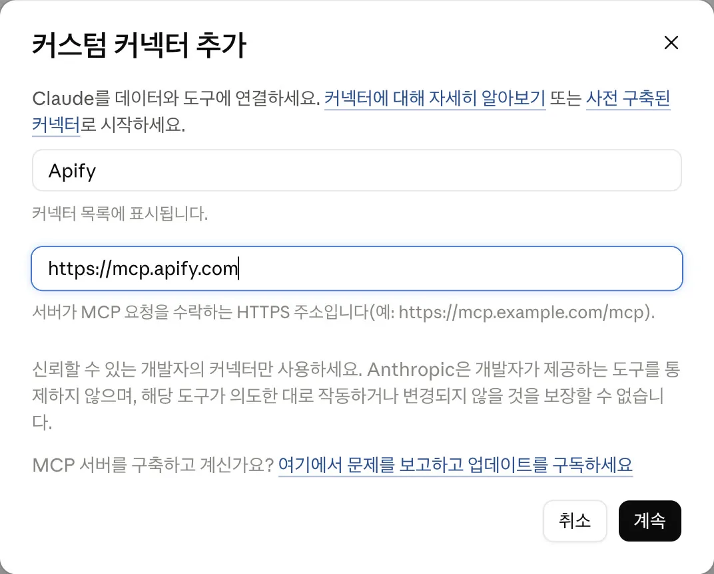
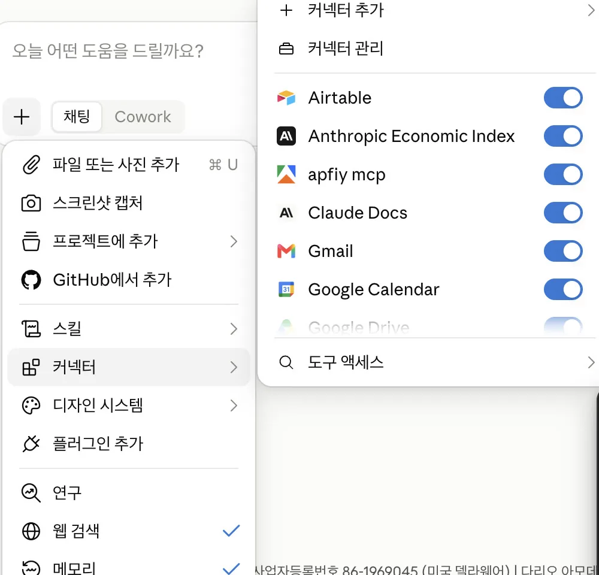
- Claude 무료 플랜은 커스텀 커넥터 1개까지, Pro·Max는 제한 없어요.
- 주소는 끝에 / 없이 그대로 붙여넣으세요.
- 연결은 설정 → 커넥터에서 언제든 해제할 수 있어요.
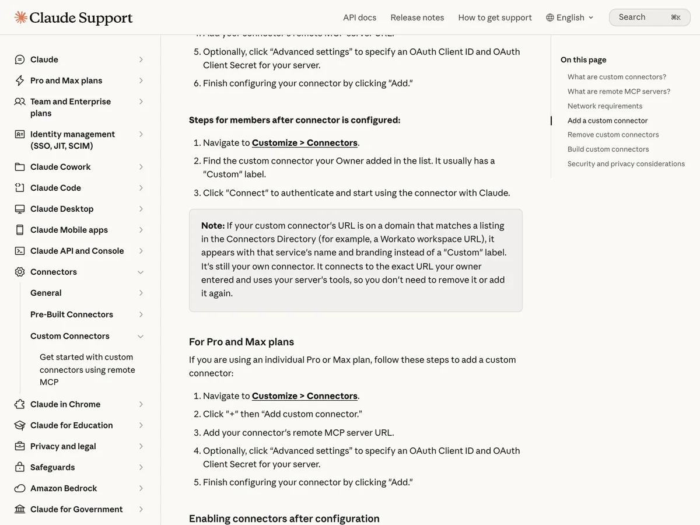
3. Apify MCP: 경쟁사 릴스에서 잘 터진 훅 뽑기
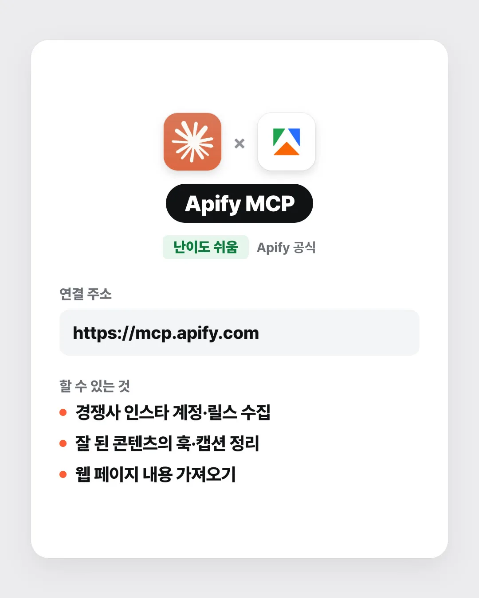
- 연결 주소:
https://mcp.apify.com - 로그인: Apify 계정으로 로그인 후 승인 (계정이 없으면 가입)
- 비용: Apify에서 스크레이퍼(Actor)를 실행할 때마다 Apify 크레딧이 쓰여요. 처음엔 결과 개수를 작게(20~30개) 지정하세요.
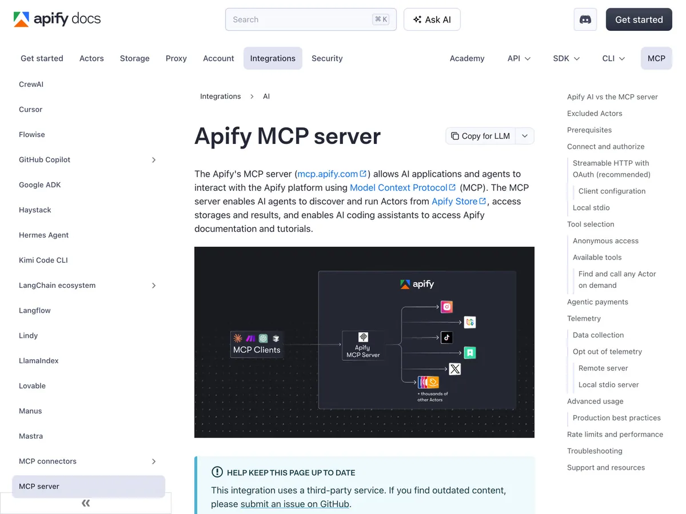
바로 쓰는 프롬프트
Apify로 인스타그램 @경쟁사계정 의 최근 릴스 30개를 가져와줘.
조회수 상위 5개의 첫 문장(훅), 영상 길이, 캡션 첫 줄을 표로 정리해줘.내 계정 @내계정 의 최근 릴스 20개를 가져와서
평균 조회수보다 2배 이상 잘 된 릴스만 골라 공통점을 3가지로 정리해줘.경쟁사 3곳(@a, @b, @c)의 최근 한 달 게시물을 가져와서
주제·형식(릴스/캐러셀)·게시 요일별로 비교표를 만들어줘. 계정당 30개까지만.4. Meta Ads MCP: 성과 보고, 돈 새는 광고 끄기
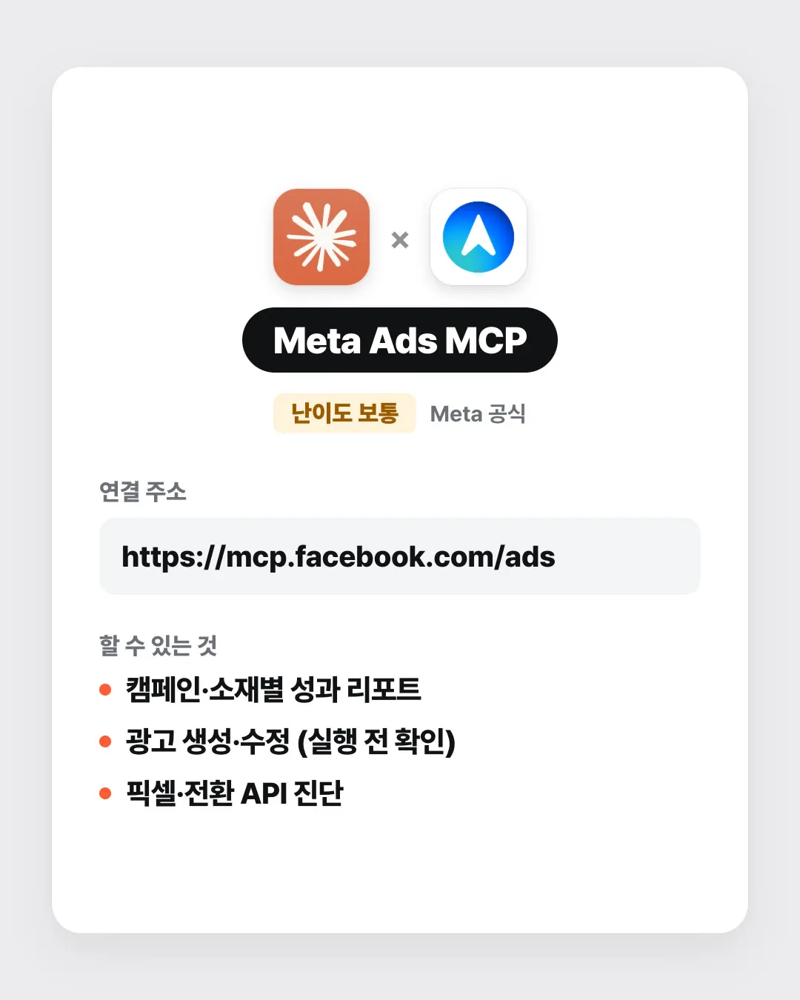
- 연결 주소:
https://mcp.facebook.com/ads(Meta 공식) - 로그인: Meta 로그인 → 연결할 광고 계정과 비즈니스를 선택 → 권한 승인
- 할 수 있는 것: 캠페인·소재별 지출·노출·CTR·ROAS 리포트, 광고 생성·수정, 오디언스·카탈로그 관리, 픽셀·전환 API 진단
- 안전장치: 새로 만드는 광고는 일시중지 상태로 만들어지고, 활성화 전에 Claude가 확인을 받아요. 광고를 끄는 요청은 광고 수정 기능으로 처리돼요.
- 주의: Meta가 단계적으로 열고 있어서, 계정에 따라 아직 일부 기능이 안 보일 수 있어요.
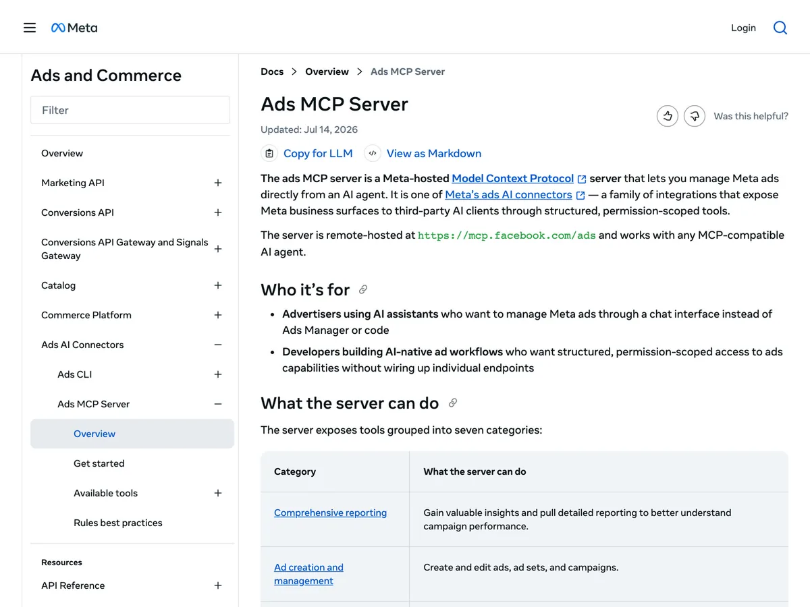
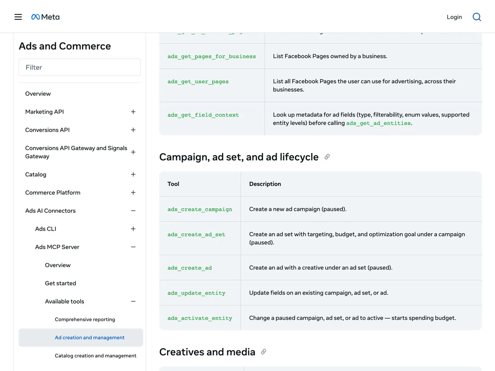
바로 쓰는 프롬프트
지난 7일 광고 계정의 캠페인별 지출, CTR, CPA, ROAS를 표로 보여줘.
CPA가 높은 순서로 정렬해줘.CPA가 계정 평균보다 2배 이상 높은 광고를 찾아서 원인을 추정해주고,
끌지 말지 추천해줘. 실제로 끄기 전에는 반드시 나한테 확인받아줘.성과가 가장 좋은 광고의 타깃은 그대로 두고, 문구만 바꾼 새 광고 2개를
일시중지 상태로 만들어줘. 만든 뒤 차이점을 정리해줘.5. Google Analytics MCP: 결제 어디서 이탈하는지 찾기
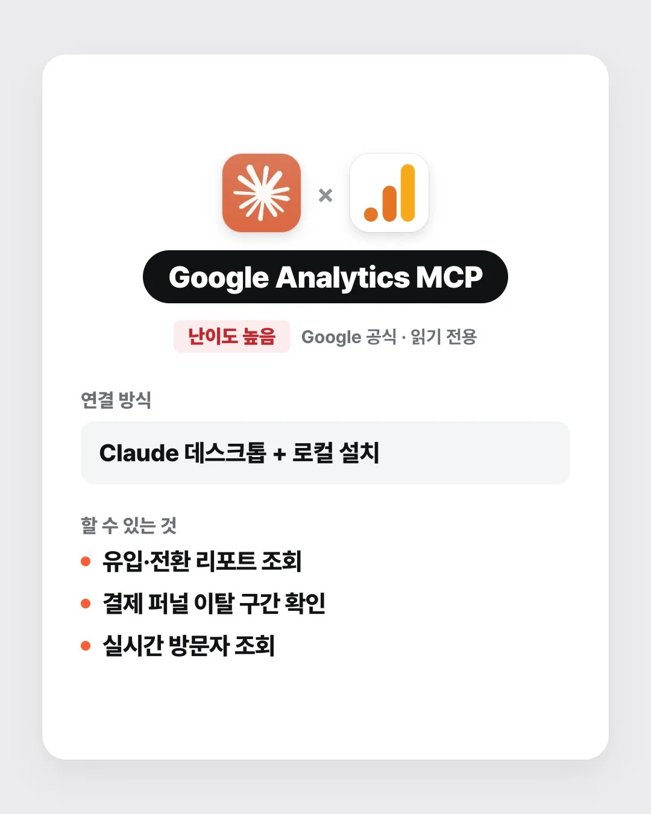
- 공식 서버: Google이 만든
google-analytics-mcp(읽기 전용이라 설정을 바꾸지 않아요) - 연결 방식: 원격 주소가 없어서 내 컴퓨터에 설치해서 Claude 데스크톱과 연결해요. 이 5개 중 가장 어려워요.
- 필요한 것: Google Cloud 프로젝트에서 Analytics Admin API·Data API 사용 설정, 내 컴퓨터의 Python과 Google 인증 설정
- 할 수 있는 것: 계정·속성 조회, 리포트, 퍼널 리포트, 실시간 리포트
- 대안: 설치가 부담되면 GA4를 원격으로 연결해주는 외부 서비스도 있어요. 공식이 아니니 권한 범위를 꼭 확인하세요.
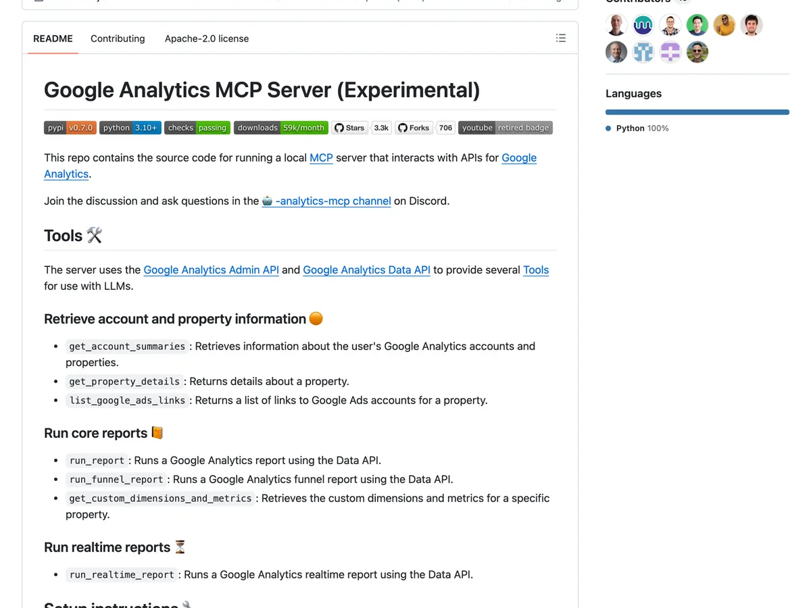
바로 쓰는 프롬프트
지난 30일 상품 상세 → 장바구니 → 결제 시작 → 구매 퍼널을
단계별 사용자 수와 이탈률로 보여줘. 이탈이 가장 큰 단계를 짚어줘.결제 단계 이탈률을 모바일과 PC로 나눠서 비교하고,
차이가 큰 구간과 확인해볼 가설 3가지를 알려줘.지난주 대비 이번 주 유입 채널별 세션과 전환율 변화를 표로 요약해줘.6. Google Sheets MCP: 보고서 시트에 복붙 없이 꽂기
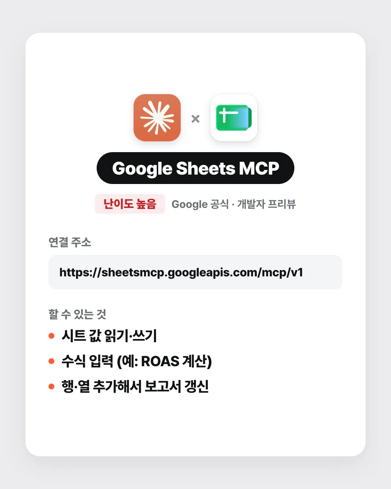
- 연결 주소:
https://sheetsmcp.googleapis.com/mcp/v1(Google 공식, 개발자 프리뷰) - 필요한 것: Google Workspace 개발자 프리뷰 프로그램 가입, Google Cloud 프로젝트에서 Sheets API·Sheets MCP API 사용 설정, OAuth 클라이언트 생성
- OAuth 리디렉션 URI:
https://claude.ai/api/mcp/auth_callback - Claude 커넥터 추가 시 고급 설정에 OAuth Client ID·Secret 입력
- 할 수 있는 것: 셀 값 읽기·쓰기, 수식 입력, 행·열 추가
- 주의: 프리뷰 단계라 설정이 바뀔 수 있어요. 막히면 공식 문서를 먼저 확인하세요.
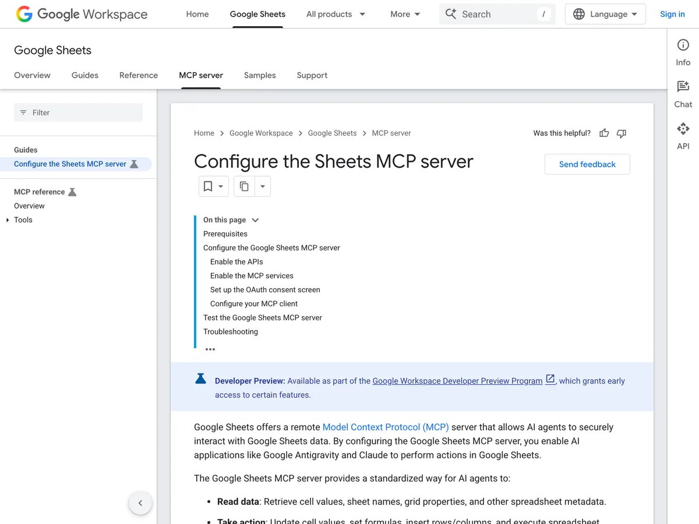
바로 쓰는 프롬프트
'광고 보고서' 시트의 B2부터 날짜, 광고비, 매출을 채우고
D열에는 ROAS 수식(매출 ÷ 광고비 × 100)을 넣어줘.Meta Ads에서 지난 7일 캠페인 성과를 가져와서
'주간 리포트' 시트 맨 아래에 새 행으로 추가해줘.'광고 보고서' 시트의 이번 달 데이터를 읽고
ROAS가 가장 낮은 캠페인 3개와 개선 아이디어를 정리해줘.7. Notion MCP: 실패한 광고 거르고 새 기획안 등록
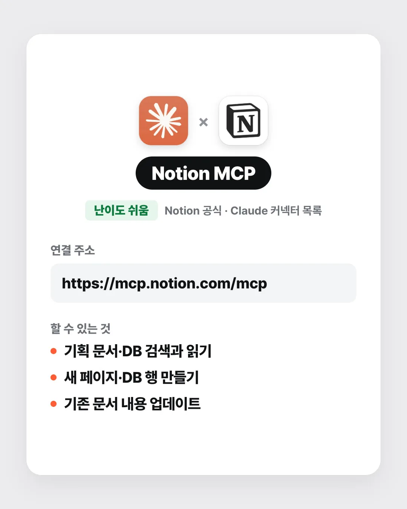
- 연결 주소:
https://mcp.notion.com/mcp(Notion 공식) - 더 쉬운 방법: Claude 커넥터 목록에서 Notion을 검색해서 바로 추가해도 돼요.
- 로그인: Notion 로그인 → 연결할 워크스페이스·페이지 권한 승인
- 할 수 있는 것: 문서·DB 검색과 읽기, 새 페이지·DB 행 만들기, 기존 문서 수정
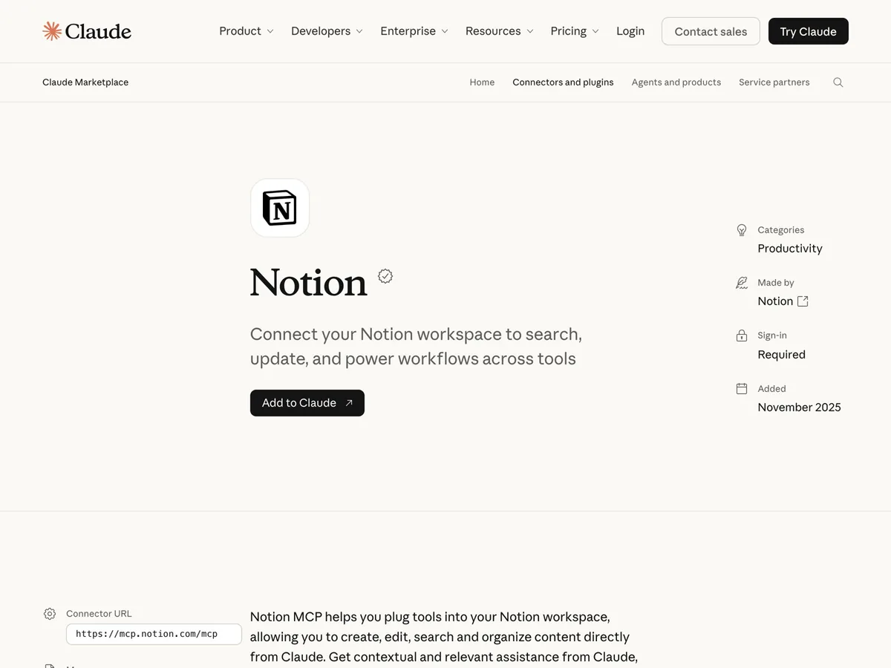
바로 쓰는 프롬프트
노션 '콘텐츠 기획 DB'에서 지난달 성과가 낮았던 항목을 찾아
공통점을 3가지로 정리해줘.오늘 정리한 경쟁사 훅 분석을 바탕으로 '콘텐츠 기획 DB'에
다음 주 기획안 3개를 새 행으로 등록해줘. 상태는 '아이디어'로 해줘.'주간 회의록' 페이지 맨 아래에 오늘 광고 점검 결과를 5줄로 요약해서 추가해줘.8. 5개를 이어서 쓰는 법
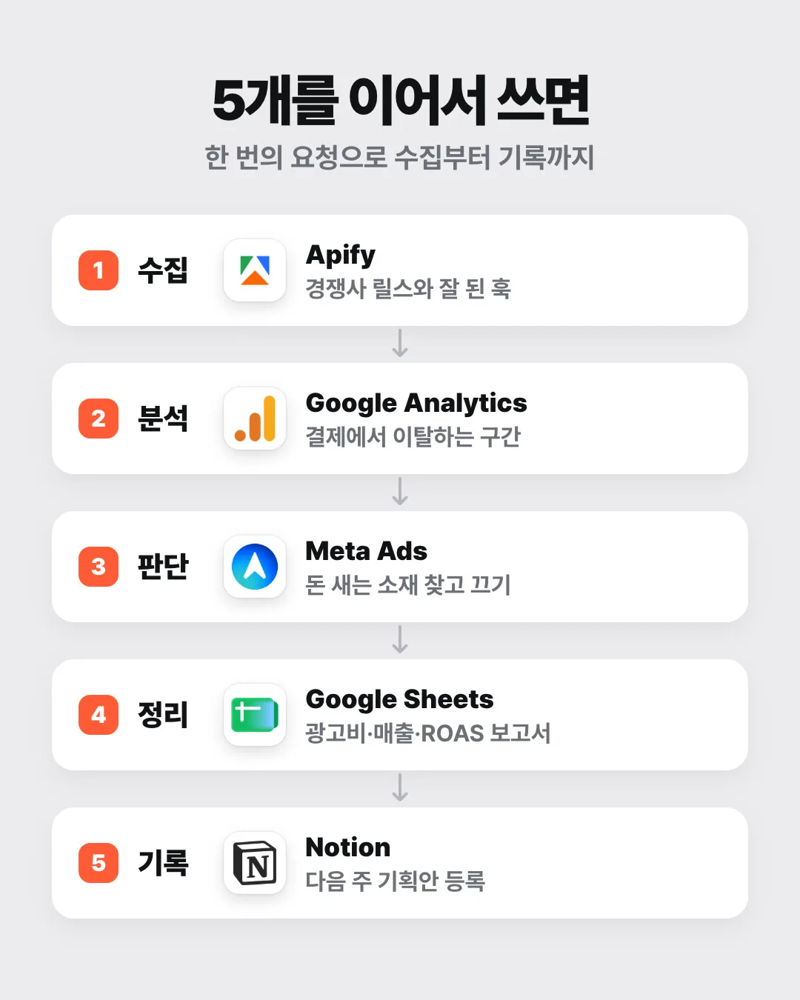
연결을 다 했다면 한 번에 이렇게 시켜보세요.
이번 주 마케팅 점검을 해줘. 단계마다 결과를 짧게 보여주고 넘어가줘.
1. Apify로 경쟁사 @a, @b 의 최근 릴스 20개씩 가져와서 잘 된 훅 5개 정리
2. Google Analytics에서 지난 7일 결제 퍼널 이탈이 가장 큰 단계 찾기
3. Meta Ads에서 CPA가 평균의 2배 이상인 광고 찾기 (끄기 전에 나한테 확인)
4. 위 결과를 '주간 리포트' 시트에 새 행으로 정리
5. 경쟁사 훅을 참고해서 다음 주 기획안 3개를 노션 '콘텐츠 기획 DB'에 등록방향과 판단은 사람이, 반복 실행은 AI가. 광고 끄기·예산 변경처럼 돈이 걸린 작업은 항상 확인받고 실행하게 하세요.
9. 자주 묻는 질문
Q. 돈이 드나요? Claude 무료 플랜도 커스텀 커넥터 1개는 쓸 수 있고, Pro·Max는 제한이 없어요. Apify는 스크레이퍼를 실행할 때 Apify 크레딧이 쓰여요. 나머지 서비스는 각자의 요금 정책을 확인하세요. Q. 내 광고 계정을 연결해도 안전한가요? 연결할 때 뜨는 권한 화면에서 범위를 확인하고, Meta는 필요한 광고 계정만 선택하세요. 쓰기 작업(광고 수정, 시트·노션 기록)은 프롬프트에 "실행 전에 확인받아줘"를 넣는 습관을 들이세요. 연결은 설정 → 커넥터에서 언제든 해제할 수 있어요. Q. 연결했는데 Claude가 도구를 안 써요. 채팅 입력창 왼쪽 아래 + → 커넥터에서 해당 커넥터가 켜져 있는지 확인하세요. 프롬프트에 "Apify로", "노션에서"처럼 도구 이름을 넣으면 더 잘 써요. Q. Meta Ads 주소를 넣었는데 안 돼요. 주소 끝에 /가 붙지 않았는지 확인하세요. Meta가 계정별로 순차 오픈 중이라, 아직 내 계정에 열리지 않았을 수도 있어요. Q. GA4·Sheets는 꼭 해야 하나요? Google Cloud 설정이 필요해서 어려운 편이에요. 먼저 Notion·Apify·Meta Ads 세 개로 시작하고, 익숙해지면 추가하세요.
공식 문서 링크
- Claude 커스텀 커넥터: https://support.claude.com/en/articles/11175166-get-started-with-custom-connectors-using-remote-mcp
- Apify MCP: https://docs.apify.com/platform/integrations/mcp
- Meta Ads MCP: https://developers.facebook.com/documentation/ads-commerce/ads-ai-connectors/ads-mcp-server/ads-mcp-server-overview
- Google Analytics MCP: https://github.com/googleanalytics/google-analytics-mcp
- Google Sheets MCP: https://developers.google.com/workspace/sheets/api/guides/configure-mcp-server
- Notion MCP: https://developers.notion.com/guides/mcp/get-started-with-mcp
*2026년 9월 27일 기준으로 공식 문서를 확인해 정리했어요. 서비스 정책은 바뀔 수 있어요.*
더 많은 마케팅 자동화 방법은 인스타그램 @work__zero 에서 공유하고 있어요.